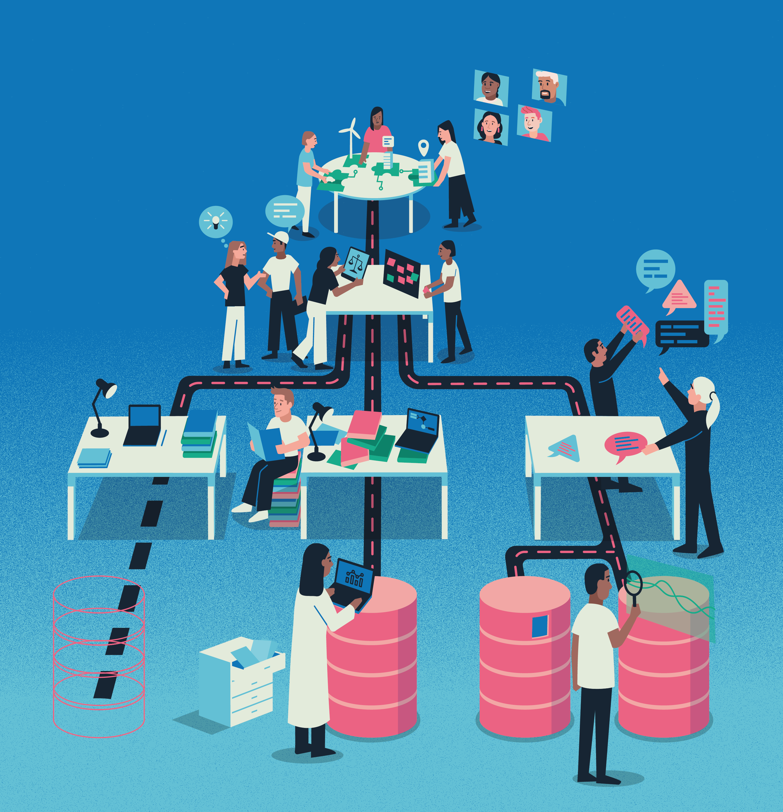

Trustworthy and Ethical Assurance (TEA)¶
Under Construction 🚧
Please note that this site is currently under construction, and several pages are in development. As such, there may be references to information that does not currently exist.
- You can visit our GitHub repository project page to view a roadmap about ongoing work to get a better idea of when features and information will be available: https://github.com/alan-turing-institute/AssurancePlatform/projects/6
- You can also get involved with any open discussions here: https://github.com/alan-turing-institute/AssurancePlatform/discussions
- Please read our community guidelines and code of conduct if you plan on contributing to this project: https://github.com/alan-turing-institute/AssurancePlatform/blob/main/CODE_OF_CONDUCT.md
Welcome to the Trustworthy and Ethical Assurance (TEA) documentation site 👋.
This site contains information about the following:
- An introduction to trustworthy and ethical assurance
- User guidance for the TEA platform
- Technical documentation for the TEA platform
Funding Statement 💶¶
Between April 2023 and December 2023 this project received funding from the Assuring Autonomy International Programme, a partnership between Lloyd’s Register Foundation and the University of York, which was awarded to Dr Christopher Burr.